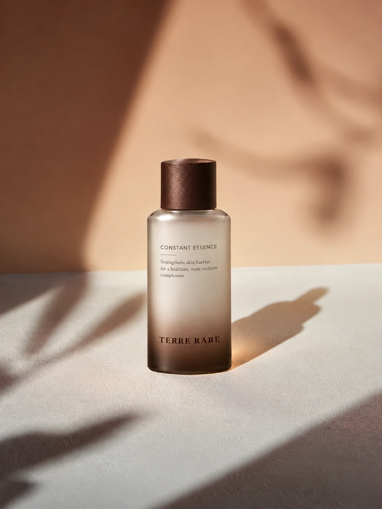
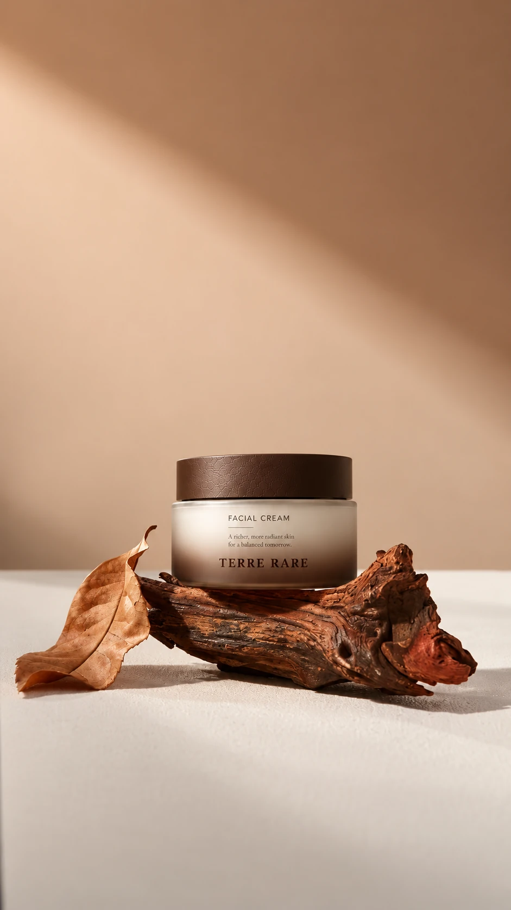

Formulation notes
From ingredient to formula
Identity, source and purpose: the questions that give an ingredient story substance.
Read the articleThe questions, principles and details behind a considered skincare collection.

Identity, source and purpose: the questions that give an ingredient story substance.
Read the article
A closer look at the tactile, everyday side of skincare.
Explore the series
No dermatologist endorsement or expert review has been published for this collection.